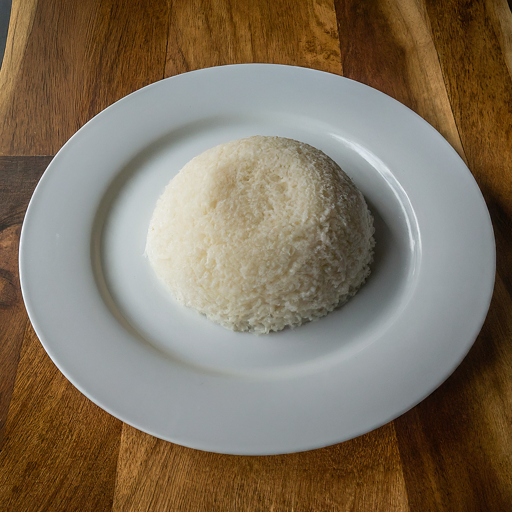
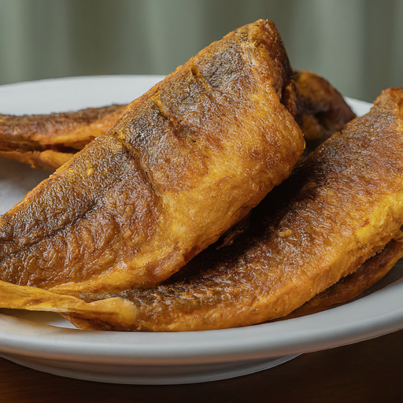

Welcome to Gillani's. We elevate your dining experience with innovative cuisine and a stylish ambiance
Explore our menu below and discover your next culinary adventure
Menu
The Foundation
Ugali -This iconic dish reigns supreme as Kenya's staple. Crafted from finely ground maize (cornmeal), ugali is a versatile base, perfectly complementing stews and an array of seasonal vegetables. Its dense, yet subtly sweet nature is traditionally enjoyed by shaping small portions into bite-sized morsels for dipping or scooping.

Rice-While not as ubiquitous as ugali, rice holds a prominent position, particularly in coastal regions. Eaten plain or delicately seasoned with spices and vegetables, it provides a lighter alternative for those seeking a more delicate foundation for their culinary exploration.
Sukuma Wiki- Kenya's national treasure, sukuma wiki, celebrates the humble collard green (sukuma) in a simple yet masterful way. Tenderly sauteed with onions and often adorned with vibrant tomatoes, spices, and even a touch of meat, this dish offers a symphony of textures and flavors, showcasing the heart of Kenyan home cooking.
Irio (Mukimo)-A cherished dish from the Kikuyu people, irio (mukimo) is a delightful mash. Combining creamy potatoes, sun-kissed maize kernels, vibrant green beans, and plump peas, this comforting creation offers a harmonious blend of textures and a symphony of earthy notes.
Githeri-Another Kikuyu staple, githeri presents a hearty and soulful combination of legumes (often beans and peas) and maize kernels, simmered to perfection. Hints of onion, tomato, and spices elevate this rustic dish, making it a perfect companion to a variety of other culinary delights.
Matoke-This luxurious stew features green bananas as its centerpiece. Slow-cooked with a fragrant blend of tomatoes, onions, and spices, an optional addition of meat can further enrich the dish. The resulting creation boasts a unique and captivating texture, with the green bananas offering a subtle sweetness that perfectly counterpoints the savory elements.
Ode to the Grill
Nyama Choma- This Swahili term translates to "roasted meat" and aptly captures the essence of this beloved culinary tradition. Goat, beef, chicken, or even fish are meticulously seasoned with just a touch of salt and pepper, then slow-cooked over charcoal or an open fire. The result? Succulent, smoky, and deeply flavorful meat that celebrates the art of grilling in its purest form.
Kuku Paka-A fragrant ode to poultry, kuku paka translates to "spiced chicken." Tender pieces of chicken are marinated in a symphony of carefully chosen spices, imbuing them with an array of aromatic notes. Cooked to perfection, this dish may incorporate variations such as creamy coconut milk or the vibrant addition of vegetables, further elevating the experience.
Samaki wa Kuumanga-This coastal masterpiece features fish bathed in a luxuriously creamy coconut milk sauce. Hints of tomato, onion, and spices add complexity, while the gentle sweetness of the coconut milk creates a perfect harmony of flavors. This dish is a testament to the culinary ingenuity found along Kenya's stunning coastline.

Beyond the Plate
Mandazi-These delightful pastries offer a delightful contrast to the savory offerings. Deep-fried to golden perfection, mandazi resemble donuts but often take a triangular shape and boast a subtle sweetness. Perfect for a quick snack or a delightful breakfast on the go, they are a beloved indulgence.
Kachumbari-This vibrant chopped salad features a medley of fresh tomatoes, onions, coriander (cilantro), and chili. It provides a refreshing and tangy counterpoint to the richness of many Kenyan dishes, adding a touch of brightness and cleansing the palate for the next culinary adventure.
Chai-A cornerstone of Kenyan beverage culture, chai is a strong, black tea traditionally served with milk and sugar. Enjoyed throughout the day, it provides a robust and invigorating start to the morning or a comforting and familiar companion in the afternoon.
Weka Order Tukuletee..
Make Your Order And We Shall Call To Confirm Your Details